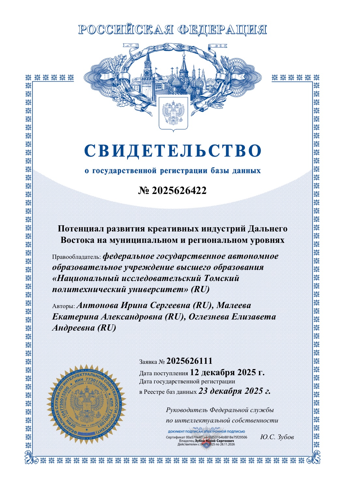

«Потенциал развития креативных индустрий Дальнего Востока на муниципальном и региональном уровнях»
© Федеральное государственное автономное образовательное учреждение высшего образования «Национальный исследовательский Томский политехнический университет», 2025. Материалы базы данных и визуализации охраняются законодательством об авторском праве. При использовании материалов ссылка на источник обязательна.
Исследование выполнено за счет гранта Российского научного фонда № 25-28-01135, https://rscf.ru/project/25-28-01135/
This study was supported by the grant of the Russian Science Foundation № 25-28-01135, https://rscf.ru/project/25-28-01135/